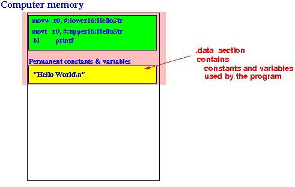
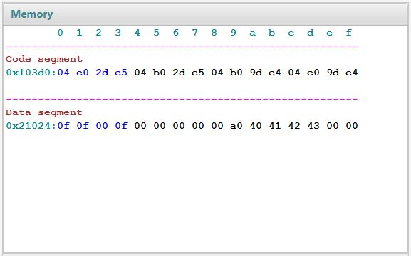

- The .data assembler directive
tells the ARM assembler to
start assembling
the line after the directive into
the .data section of the
computer program
- The .data section
of a computer program contains
permanent
constants and
variables used in
computer program.
 That means:
- After the .data directive in an assembler program, we can define constants and program variables
Example: the Hello World program
.global main // ************************ Starting variable definition ***************** .data // *********************************************************************** HelloStr: .asciz "Hello World\n" // <--- This a String constant // ************************ Starting computer instruction **************** .text // *********************************************************************** main: push {lr} // Save the return address on the stack push {fp} // Save the frame pointer on the stack // Explained later in CS255 /* ---------------------------------------- Pass the string to printf function ---------------------------------------- */ movw r0, #:lower16:HelloStr movt r0, #:upper16:HelloStr /* ---------------------------------------- Call the printf function ---------------------------------------- */ bl printf // Call printf function pop {fp} // Pop the frame pointer pop {lr} // Pop the return address // Explained later in CS255 .endAfter processing the .data directive, the assembler will:
- Translate the lines that follows the
.data
(the section highlighted in yellow)
and
- Store the constants/variables in the
.data section of the program:
The assembler will keep doing this until it encounters a .text dirctive
So you can switch between .data and .text section as often as you wish in an assembler program
- An initialized variable is
a program variable with an
initial constant value
In Java, you define an initialized variable as follows:
int x = 123; // x has an initial value 123 short y = 22; // y has an initial value 22 - There are different types of
initialized variable used in
computer programs that contains:
- int typed constants (= a binary number that consists of 32 bits)
- short typed constants (= a binary number that consists of 16 bits)
- byte typed constants
(= a binary number that consists of
8 bits)
- float typed constants (= a IEEE 754 coded number that consists of 32 bits)
- double typed constants
(= a IEEE 754 coded number that consists of
64 bits)
- String typed constants (= a series of ASCII codes)
Each type of value is defined using its own assembler directive:
- The assembler will convert the constants in the appropriate code according to the given directive !!!
- Directives used to
define various types
of constant values
in ARM assembler langaue:
.byte Value - defines an 1 byte 2's complementary binary code the represents Value .2byte Value - defines a 2 bytes 2's complementary binary code the represents Value .4byte Value - defines a 4 bytes 2's complementary binary code the represents Value .float Value - defines a 4 bytes IEEE 754 binary code the represents Value .double Value - defines an 8 bytes IEEE 754 binary code the represents Value .asciz "..." - defines a series ASCII binary code the represents string "..."
- Example:
// ************************ Starting variable definition ***************** .data // *********************************************************************** DataStart: .byte 15 .2byte 15 .4byte 15 .float 5 .asciz "ABC"These assembler directives will translate into the following .data section -- I will show you this in class using EGTAPI:

- Example Program:
(Demo above code)

- Prog file: /home/cs255001/demo/asm/1-directives/constants.s
How to run the program:
- Use EGTAPI on the file demo/1-directives/constants.s
You can see the values stored in memory as follows:
- The Data segment contains
the following series of
hexadecimal number:
0f 0f 00 0f 00 00 00 00 00 a0 40 41 42 43 00 00These values were defined by the list of assembler directive in the example.
Let me explain what each directive has create....
- The ".byte 15
assembler directive has
created the
1 byte 2's complement code
00001111
(that represents the value 15):
0f 0f 00 0f 00 00 00 00 00 a0 40 41 42 43 00 00 Hex 0f = 00001111(2)
- The ".2byte 15
assembler directive has
created the
2 bytes 2's complement code
0000000000001111
(that represents the value 15):
0f 0f 00 0f 00 00 00 00 00 a0 40 41 42 43 00 00 Hex 0f 00 = (you have to reverse the order - explained later) = 000f(16) = 0000000000001111(2)
- The ".4byte 15
assembler directive has
created the
4 bytes 2's complement code
00000000000000000000000000001111
(that represents the value 15):
0f 0f 00 0f 00 00 00 00 00 a0 40 41 42 43 00 00 Hex 0f 00 00 00 = (you have to reverse the order - explained later) = 0000000f(16) = 00000000000000000000000000001111(2)
- The ".float 5
assembler directive has
created the
4 bytes IEEE 754 code
01000000101000000000000000000000
(that represents the (floating point)
value 5):
0f 0f 00 0f 00 00 00 00 00 a0 40 41 42 43 00 00 Hex 00 00 a0 40 = (you have to reverse the order - explained later) = 40a00000(16) = 01000000101000000000000000000000(2)Previously, in this webpage (and lecture), we saw that the IEEE 754 code 01000000101000000000000000000000 represents the floating point value 5 - click here
- And finally,
the ".asciz "abc"
assembler directive has
created this series of
ASCII code:
01000001 01000010
01000011
(that represents the 3 characters
a b c):
0f 0f 00 0f 00 00 00 00 00 a0 40 41 42 43 00 00 Hex 41 42 43 = 01000001(2) 01000010(2) 01000011(2) = a b c
- Uninitialized variables are
program variables that
do not have an initial value.
In Java, an uninitialized variable is defined like this:
int x; or short y;
- An uninitialized
program variable is
created
using the
.skip assembler directive:
.skip n // will reserve n bytes for a program variable
- In order to use .skip to
define variable of
a certain data type,
you will need to know
how many bytes it takes
to store values of that
data type !!!
Maybe you learned this in CS170 or CS171.
In any case, here are the sizes of the data types used in most high level programming languages:
byte type: 1 byte short type: 2 bytes int type: 4 bytes float type: 4 bytes double type: 8 bytes char type: 1 byte (Java uses 2 bytes for Unicode)
- Here's how you would define:
In C/Java How to define such variable in assembler ------------ --------------------------------------------- int i; .skip 4 short s; .skip 2 float f; .skip 4
- When a constant/variable is
defined in the
.data section,
some
memory cells in the memory
are reserved to
store its value
In order to access the constant/variable in the memory, we need to provide the address of constant/variable in memory !!!
So we must remember the location of every variable defined in the program:
- Analogy:
- Suppose you are traveling and need
a room in a hotel
(= you need to store a value in memory)
- Every room is the same in the hotel, each room has
a unique room number
(= every memory cell is the same, each memory cell has
a unique address)
- It does not matter which room you get (= it does not matter
which memory cell you reserve for the variable)
- But if your friend(s) need to find you, they will need to know your room number (if you need to use the variable, you will need to know the memory address of that variable !)
- Suppose you are traveling and need
a room in a hotel
(= you need to store a value in memory)
- $64,000 question:
- How do we find out the memory location where a variable is stored ???
Well, we have discuss this mechanism in the previous webpage...
But I will repeat the answer here for emphasis
- The assembler provides
a mechanism
to "mark" a
memory location that has
a special significance.
This mechinism is called a label (see: click here )
For example: in the Hello World program
// ************************ Starting variable definition ***************** .data // *********************************************************************** HelloStr: // <---- This is a label .asciz "Hello World\n"Notice that:
- A label consists of:
- An identifier
followed by a
colon (:)
Example: main:
- An identifier
followed by a
colon (:)
- You should add a label before
every constant/variable definition
in the
assembler program !!!
Because:
- Without a label, you have no way to find and use the constant or program variable !!!
- A label consists of:
- So the proper way to
define the
various constants in the
above example program is
add a label to mark
the location of
each constant as follows:
// ************************ Starting variable definition ***************** .data // *********************************************************************** byteConst: .byte 15 shortConst: .2byte 15 intConst: .4byte 15 floatConst: .float 5 doubleConst: .double 5 strConst: .asciz "ABC"
-
It is important that you
realize that the
assembler (= translation program)
will keep track of the
memory locations
that it uses to store
the translated constants and/or program variables
in
.data segment
of the memory also.
I.e.:
- The assembler knows the exact memory location that the next translated item will go in the .data segment !!!
When the assembler finds a label (such as HelloStr:) in the assembler program, the assembler will equate the label to the memory address where it will put the next constant or program variable
- Example Program:
(Demo above code)
- Prog file: /home/cs255001/cs255/demo/1-directives/constants.s
How to run the program:
- Use EGTAPI on
demo/1-directives/constants.s
Right click on the variable name to show its address in memory
We will learn soon how to access a constant/program variable in a computer program using its label